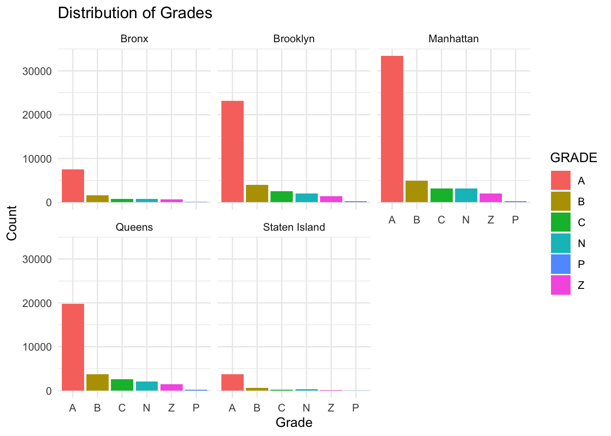

Since the data from the year 1900 lacks both grade and score information, we exclude these records. We will focus on the following eight columns, which contain all the relevant data for our analysis.
Code
library(tidyverse)
── Attaching core tidyverse packages ──────────────────────── tidyverse 2.0.0 ──
✔ dplyr 1.1.4 ✔ readr 2.1.5
✔ forcats 1.0.0 ✔ stringr 1.5.1
✔ ggplot2 3.5.1 ✔ tibble 3.2.1
✔ lubridate 1.9.3 ✔ tidyr 1.3.1
✔ purrr 1.0.2
── Conflicts ────────────────────────────────────────── tidyverse_conflicts() ──
✖ dplyr::filter() masks stats::filter()
✖ dplyr::lag() masks stats::lag()
ℹ Use the conflicted package (<http://conflicted.r-lib.org/>) to force all conflicts to become errors
Rows: 258714 Columns: 8
── Column specification ────────────────────────────────────────────────────────
Delimiter: ","
chr (6): DBA, BORO, CUISINE DESCRIPTION, INSPECTION DATE, GRADE, INSPECTION ...
dbl (2): CAMIS, SCORE
ℹ Use `spec()` to retrieve the full column specification for this data.
ℹ Specify the column types or set `show_col_types = FALSE` to quiet this message.
We can see that American, Chinese, and Latin American food are the top three popular cuisine, followed by Mexican, Caribbean, and Japanese cuisines. Then we want to know the average weighted score of these cuisine types.
We observe that Caribbean, Chinese, Spanish, and Asian/Asian Fusion cuisines rank highly. However, despite being one of the most popular types, American cuisine does not receive a particularly good score. On the other hand, Donuts appear at the bottom, which aligns with our expectations, as they tend to be low in nutritional value and may not meet high hygiene standards during processing.
Warning in geom_text(aes(0, 12, label = "A Grade", hjust = -0.1, vjust = -1, : All aesthetics have length 1, but the data has 10935 rows.
ℹ Please consider using `annotate()` or provide this layer with data containing
a single row.
Warning: Removed 363 rows containing non-finite outside the scale range
(`stat_boxplot()`).

3.2 District Comparison
Next, we want to know the inspection result of different district in New York in the past ten years.
`summarise()` has grouped output by 'year'. You can override using the
`.groups` argument.
Code
ggplot(avg_score_by_boro_year, aes(x =factor(year), y = avg_score, fill = BORO)) +geom_bar(stat ="identity", position ="dodge") +geom_text(aes(label =round(avg_score, 1)), position =position_dodge(width =0.8), vjust =-0.5, size =2) +labs(title ="Average Score by Borough and Year",x ="Year",y ="Average Score",fill ="Borough" ) +theme_minimal() +theme(legend.position ="top")
Over the past five years, Brooklyn and Queens have consistently ranked as the top two boroughs, while Staten Island has consistently had the lowest scores. Manhattan, positioned in the middle, shows relatively stable performance. A particularly interesting trend is the steady increase in Manhattan’s average score over the past decade. In fact, all boroughs have seen an improvement in their scores over this period.
Rows: 8 Columns: 11
── Column specification ────────────────────────────────────────────────────────
Delimiter: ","
chr (3): Chain, GlobalLocations, 2023 U.S. Revenue (Billion USD)
dbl (8): USLocations, 2023 Global Revenue (Billion USD), Customer Satisfacti...
ℹ Use `spec()` to retrieve the full column specification for this data.
ℹ Specify the column types or set `show_col_types = FALSE` to quiet this message.
Code
colnames(fast_food)
[1] "Chain"
[2] "USLocations"
[3] "GlobalLocations"
[4] "2023 U.S. Revenue (Billion USD)"
[5] "2023 Global Revenue (Billion USD)"
[6] "Customer Satisfaction (%)"
[7] "Average Daily Visits per U.S. Store"
[8] "Total U.S. Visits in June 2024 (Million)"
[9] "Average Visits per Store in June 2024"
[10] "Change in Visits (June 2024 vs. May 2024) (%)"
[11] "Change in Visits (June 2024 vs. June 2023) (%)"
Code
fast_food |>ggplot(aes(x =reorder(Chain, USLocations), y = USLocations)) +geom_bar(stat ="identity", fill ="steelblue") +labs(title ="Number of U.S. Locations of Fast Food Chains",x ="Fast Food Chain",y ="Number of U.S. Locations" ) +theme_minimal() +theme(axis.text.x =element_text(angle =45, hjust =1))
Show the relationship between the number of US locations and global revenue:
Code
fast_food |>ggplot(aes(x = USLocations, y =`2023 Global Revenue (Billion USD)`, label = Chain)) +geom_point(aes(color =`Customer Satisfaction (%)`, size =`2023 Global Revenue (Billion USD)`)) +# Add size and color mappinggeom_text_repel() +# Add labels with text repellingscale_x_log10() +# Log scale for the X-axisscale_y_log10() +# Log scale for the Y-axislabs(title ="Fast Food Chains: U.S. Locations vs. Global Revenue",x ="Total Number of U.S. Locations (Log10 Scale)",y ="2023 Global Revenue (Billion USD, Log10 Scale)",color ="Customer Satisfaction (%)",size ="2023 Global Revenue (Billion USD)" ) +theme_minimal()
Rows: 25 Columns: 4
── Column specification ────────────────────────────────────────────────────────
Delimiter: ","
chr (3): Company, 2023, % CHANGE
dbl (1): 2024
ℹ Use `spec()` to retrieve the full column specification for this data.
ℹ Specify the column types or set `show_col_types = FALSE` to quiet this message.